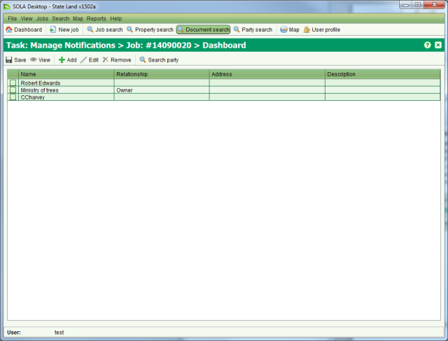
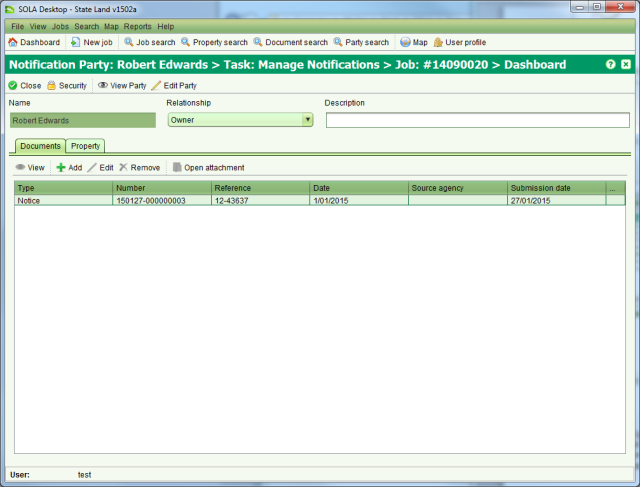

The state is obligated to ensure all parties that may be affected by its actions in relation
to state land are adequately notified of the state’s intentions. Where the state has
sufficient information to determine those parties that are likely to be affected by its
actions (such as land owners and right holders), it can choose to notify those parties
directly by letter or phone. The Notify List screen identifies the parties the state may
choose to inform about a state land project and can help to track which notifications are
sent to those parties. To access the Notify List screen you must  Start a Manage
Notifications task from the Tasks tab of the Job Details screen.
Start a Manage
Notifications task from the Tasks tab of the Job Details screen.

Notify List
When you  Start a Manage Notifications task SOLA State Land checks if any underlying
properties have been identified for the job (either by linking to a recorded property on the
Properties tab of Job Details or by the location of the state land parcels that have been
added to the job) and automatically lists any right holders from the underlying properties in
the Notify Lists screen. You can
Start a Manage Notifications task SOLA State Land checks if any underlying
properties have been identified for the job (either by linking to a recorded property on the
Properties tab of Job Details or by the location of the state land parcels that have been
added to the job) and automatically lists any right holders from the underlying properties in
the Notify Lists screen. You can  Edit
these parties and link copies of any notices sent to them from the Notify Details screen.
Edit
these parties and link copies of any notices sent to them from the Notify Details screen.

Notify Details
If a party is not listed by default in the Notify List, you can add them using  Add on the Notify List screen. This will
open the Party Details screen allowing you to enter the name and address details for the
party to notify. When complete, click
Add on the Notify List screen. This will
open the Party Details screen allowing you to enter the name and address details for the
party to notify. When complete, click  Save and Close to open the Notify Details screen
Save and Close to open the Notify Details screen
If the party to notify is already recorded in SOLA State Land, you can use  Search party on Notify List to open the Party Search
screen to locate and
Search party on Notify List to open the Party Search
screen to locate and  Select the party.
Select the party.
If the party has an association with one or more properties that are affected by the job,
then you should use the  Add on the
Property tab to link the party to those properties.
Add on the
Property tab to link the party to those properties.
When you have completed editing the notify party information,  Close the Notify Details screen and
Close the Notify Details screen and  Save your changes from the Notify List
screen.
Save your changes from the Notify List
screen.